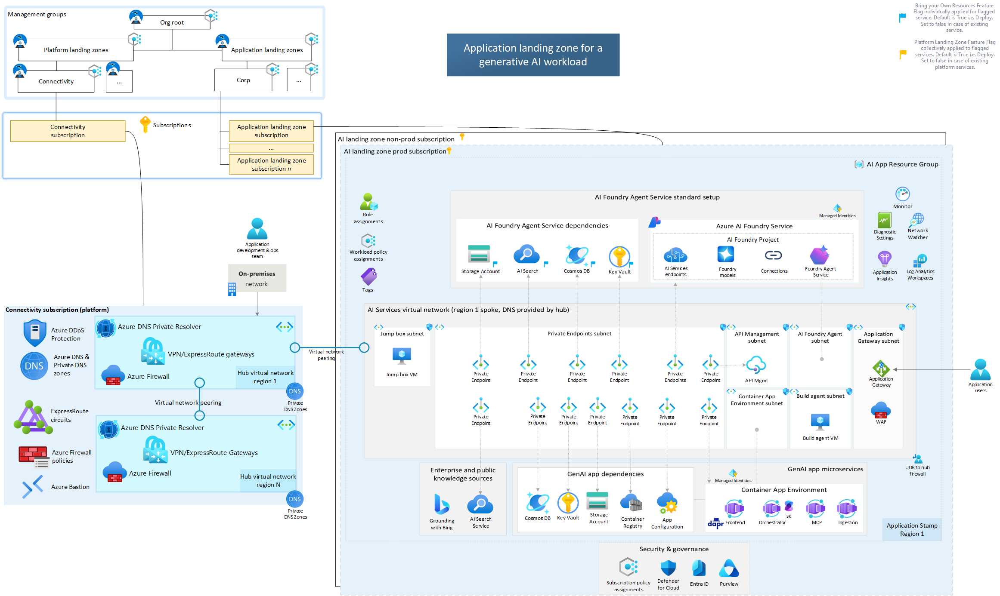
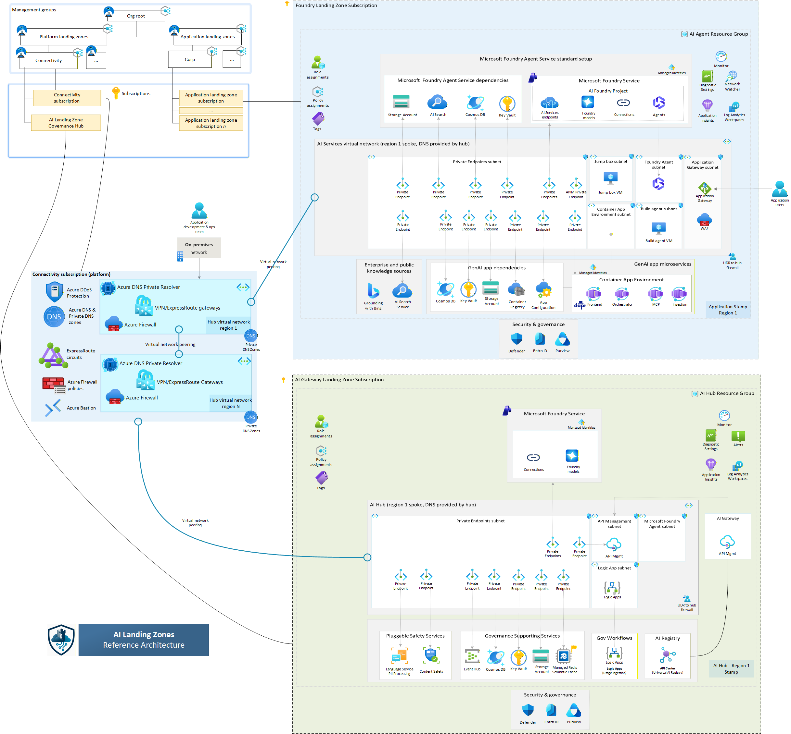

Inside this Post

Executive Summary
- The gap in many AI platforms is not perimeter tooling. It is the inability to prove path, policy, and control ownership end to end.
- APIM should be treated as the AI control plane, not just a reverse proxy.
- Private Endpoint does not change routing by itself. DNS determines whether traffic actually takes the private path.
- Standard v2 can be sufficient when you need private backend access. Premium v2 is the fit when the gateway itself must sit inside the private boundary.
- Compliance evidence should be designed up front: policy state, RBAC, DNS resolution, flow telemetry, and logs tied to each control objective.
The Architectural Shift
A lot of teams still treat this as a gateway selection exercise. That is too narrow.
For regulated AI workloads, the real unit of architecture is the landing zone. Ingress, identity, private connectivity, DNS, API policy, model governance, and monitoring have to work together as one control system. That is why the Azure AI Landing Zones framing is useful: it moves the conversation from product comparison to control ownership.

The officially sanctioned target-state for deploying AI Foundry workloads within an enterprise VNet boundary. Note the strict requirement for private backend connectivity and centralized identity governance.
The Foundry Agent Gateway
As teams move from simple chat experiences to agents and tool use, the gateway role expands. It is no longer only about authentication and routing. It becomes the place to govern model access, enforce quotas, standardize backend connections, and produce telemetry that operations and audit teams can use.
The key design point is not a specific orchestration pattern. It is that agent access to models and tools should be mediated through explicit gateway configuration and platform controls rather than ad hoc direct connections.
5 Impactful Takeaways
- The AI gateway is a capability set inside APIM, not a separate product category.
- Token-based limits matter more than request counts for LLM workloads.
- Managed identity is the right default for backend authentication where supported.
- Gateway policy belongs in the compliance story because it is the active enforcement layer.
- Evidence quality matters as much as network isolation quality in regulated environments.
APIM: The Federated Execution Layer
Modern AI governance requires a shift from monolithic Gateways to federated control planes. Based on official Azure technical blueprints, the gateway isn't just a proxy—it's the runtime for your compliance policy.
Federated Workspaces
Enables decentralized AI teams to productize their own APIs while a central platform team maintaining the core infrastructure. Access is strictly controlled through Azure RBAC, ensuring specific teams only see their designated models and tokens.
Policy Scoping
Policies are executed sequentially across multiple scopes: Global (Enterprise Guardrails), Workspace (Departmental Rules), Product (Tiered Access), and API (Specific Model Controls). This layered approach is the bedrock of verifiable AI compliance.
Technical Insight: The Management Plane handles configuration, while the Gateway (Data Plane) enforces routing, security, and throttling. This separation ensures that even if the control plane is offline, your AI runtime remains secure and operational.
Policy Enforcement
Network routing is passive. APIM policy is active enforcement. This is where you validate client identity, apply rate and token controls, and authenticate to AI backends with managed identity.
<policies>
<inbound>
<base />
<validate-jwt header-name="Authorization">
<openid-config url="https://login.microsoftonline.com/{{tenant-id}}/v2.0/.well-known/openid-configuration" />
<audiences>
<audience>{{apim-app-registration-client-id}}</audience>
</audiences>
</validate-jwt>
<llm-token-limit counter-key="@(context.Subscription.Id)"
tokens-per-minute="50000"
estimate-prompt-tokens="true" />
<authentication-managed-identity resource="https://cognitiveservices.azure.com"
output-token-variable-name="msi-access-token" />
<set-header name="Authorization" exists-action="override">
<value>@("Bearer " + (string)context.Variables["msi-access-token"])</value>
</set-header>
</inbound>
</policies>Be precise about what each control proves. Token policy helps with quota governance. Managed identity reduces secret sprawl. Harm-content filters help moderate unsafe content. If you need PII-specific controls, state those separately rather than implying that one safety control covers everything.
The Mistake Most Teams Make
The common mistake is to collapse three different questions into one:
- Can APIM reach private backends?
- Is the APIM gateway itself inside the private boundary?
- Can the team prove there is no unmanaged bypass path?
Those are related, but not identical. Microsoft’s current documentation is clear that Standard v2 and Premium v2 support outbound virtual network integration for private backends, while Premium v2 alone supports virtual network injection. That is the right distinction to explain to security and audit stakeholders. Microsoft Learn

Prescriptive guidance for centralizing AI API traffic via Azure API Management. Enforces a single secure ingress door for audit-ready token limits, PII scrubbing, and model backend authorization.
The practical framing is simple: if you need private backend connectivity, Standard v2 may be enough. If the control objective requires the gateway itself to live inside the private boundary, Premium v2 is the fit. That is stronger and more defensible than saying one tier is simply "more secure."
DNS and Network
Private Endpoint does not change routing by itself. DNS changes routing. If name resolution is wrong, the architecture is wrong even if the private endpoint exists.
For common AI backend stacks, the relevant private DNS zones often include privatelink.search.windows.net, privatelink.cognitiveservices.azure.com, and privatelink.blob.core.windows.net. DNS gives the address. The network gives the path. You need both for a defensible private design. Microsoft Learn
Use Private DNS Zones when Azure resources need to resolve private names within Azure. Use Azure DNS Private Resolver when name resolution needs to cross boundaries, especially between on-premises and Azure. Microsoft Learn
Defensible AI Architecture: Engineering Specification
| Control Objective | Engineering Mechanism | Evidence |
|---|---|---|
| Prevent direct public access | Disable public network access on supported backends and enforce private endpoints. | Azure Policy state, networking configuration, and denied-path test results. |
| Centralize identity enforcement | Require client JWT validation and APIM managed identity for backend calls. | Role assignments, policy configuration, and failed direct-access logs. |
| Prove request lineage | Centralized telemetry in Application Insights or Log Analytics. | KQL showing client -> APIM -> backend correlation. |
| Control AI consumption | Token-based rate limits, quotas, and backend segmentation. | Policy definitions, token metrics, and exception records. |
Threat Model
| Threat | Failure Mode | Mitigation |
|---|---|---|
| Network bypass | Clients or workloads reach AI services outside the governed path. | Private endpoints, restricted ingress, and explicit denied-path validation. |
| Identity bypass | A caller reaches the backend without the gateway-owned identity flow. | JWT validation, RBAC hardening, and managed-identity-only backend access. |
| Evidence gaps | The platform works but cannot prove who called what, through which control, and when. | Correlated logs, policy telemetry, retention, and documented control ownership. |
| Unsafe model output | Harmful or sensitive content passes through without review or enforcement. | Use the appropriate moderation, content safety, and, where needed, PII-specific controls. |
Decision Matrix
| Option | Use When | Tradeoff |
|---|---|---|
| APIM Standard v2 + private backends | You need governed private access to backends, but the gateway itself does not have to be fully injected into the private boundary. | Simpler and lower cost, but not the same as gateway-side network isolation. |
| APIM Premium v2 injected | The gateway itself must sit inside the private boundary for the control objective. | Stronger boundary narrative with more cost and platform complexity. |
| Private DNS Resolver | You need private name resolution across Azure and on-premises. | Useful for hybrid, unnecessary for many Azure-only designs. |
Recommendations
- Start the design review by naming the control objective, not the SKU.
- Document the exact ingress path, identity path, DNS path, and telemetry path for every AI request class.
- Use Standard v2 when private backend access is enough; move to Premium v2 when gateway-boundary isolation is explicitly required.
- Do not treat Private Endpoint creation as the end of the networking story. Validate DNS and routing behavior.
The "Full Control" Toolkit
To move from a design review to a production-ready environment, you need the right accelerators. We leverage established frameworks to ensure we aren't reinventing the wheel on security.
The prescriptive engineering roadmap for move-to-production governance. Essential for architects preparing for regulatory technical audits and enterprise-scale deployments.
AI Hub Gateway Solution Accelerator
A reference architecture for centralized AI API governance. It allows Line of Business (LoB) units to consume AI services safely while IT maintains the "Master Control" of the landing zone. View Repo →
aka.ms/apimlove
The definitive community resource for APIM best practices. From vector-based Semantic Caching to Workspaces (GA) for multi-tenant isolation, this is where we find the 'tried and tested' patterns for Azure's most complex API landscapes. Explore apimlove →
🚀 The Regulator-Ready Launch Checklist
Execute these critical design milestones to move your AI workload from experimentation to production-ready governance.
Ready to operationalize your Azure journey?
If you're scoping a landing zone or preparing for a compliance review, I help teams turn this kind of design into an audited, production-ready environment.